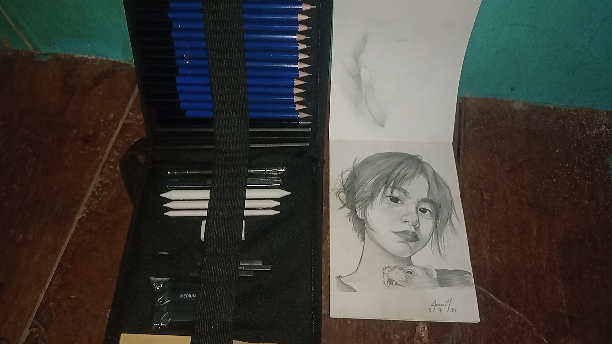
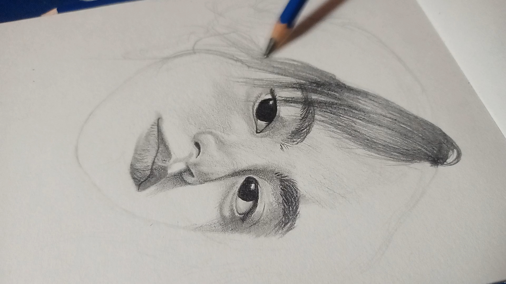

Twinkle - Toes
Twinkle - Toes
Twinkle - Toes
Twinkle - Toes
Time Duration: 3 Days
Reason: I can't use the whole time in a day to draw
Video Quality: 720P Resolution 30 fps Frame Rate. Too low cause i'm full bruh.
First of all, the reference I used was just found on TikTok, and I don't even know her name. I got attracted to her, so I collected her photos and draw him. That was the first drawing I did in 2024. YEY, and if youre happy and you know clap your hands :>
• Sketch pad
• Graphite pencil
• Blending stump
• Kneaded eraser
In graphite pencil, there is a scale from H to B, with H being the lightest and B the darkest. I primarily use the H for initial sketching because it's easy to erase, and I use the B for creating darker tones and blending stump to achieve smooth shading. Additionally, I use a kneaded eraser, which looks like clay, to remove excess graphite, and a regular eraser for finer details
1st Draw circle
2nd Draw vertical line for structure on face
3rd Draw horizontal lines to place eyes, nose, mouth
4th trace the shape of face, and add hair, and TADAAA. Youre a great drawer.
In the beginning, I showcased my most recent drawing to extend my blog, hehe, and I provided small tips like what materials I used and what steps I took first. When making the blog, it's challenging for me to film and draw simultaneously, which is why I'll edit the video so that it's easier for me to focus on drawing.